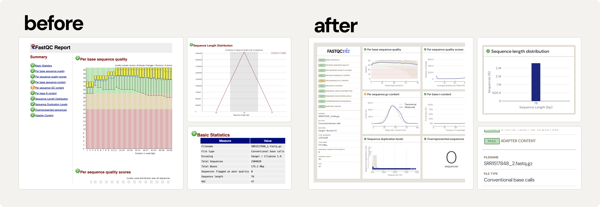

The fastqcviz package was developed to give FastQC reports the aesthetic and functional love it deserves, transforming its insights into a more visually appealing experience without changing the core analysis. A modest re-desing update for the classic FastQC report.
classic report: FastQC | ✨ fastqcviz report : fastqcviz

Installation
You can install the development version of fastqcviz from GitHub with:
# install.packages("remotes")
remotes::install_github("barreiro-r/fastqc-viz")Example
Using fastqcviz is as easy as:
library(fastqcviz)
create_fastqcviz_report(
fastqc_path = "path/to/sample_fastqc/fastqc_data.txt",
output_dir = "fastqcviz_report",
embed_resources = TRUE)